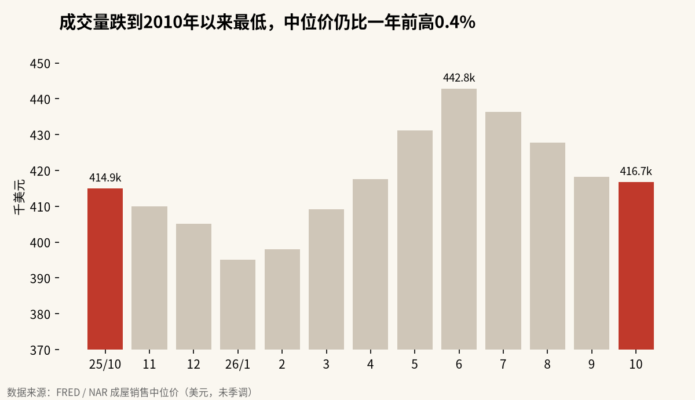
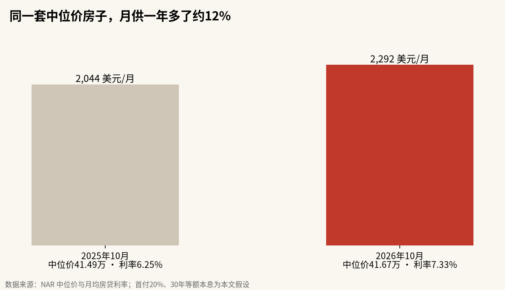

成交跌回2010年，房价却没跌：美国楼市被7.33%的房贷利率冻住了
10月美国成屋销售年化375万套，为2010年8月以来最低；中位价41.67万美元，仍比一年前高0.4%，连续第40个月同比上涨。买不起的人在等降息，卖家被低息旧贷锁在原地，可周四10年期美债收益率又升到了5.12%。
美国楼市眼下的状态，用一个字概括就是“冻”。成交量跌到了16年来的最低点，价格却纹丝不动，困境房源只占成交的2%。这不像2010年那种崩盘之后的低迷。它是一个被利率卡住的市场：买家嫌贵，卖家不肯卖，双方都在等对方先让步。只要房贷利率还在7%以上，这个僵局就很难靠价格下跌来打破。
销量、库存、价格三组数一起看
美国全国房地产经纪人协会（NAR）周四公布，10月成屋销售环比下降5.5%，经季节调整后的年化销量为375万套，同比下降8.8%。NAR首席经济学家Lawrence Yun说，这是2010年8月以来的最低水平。
| 指标 | 2026年10月 | 对比 |
|---|---|---|
| 成屋销售（年化） | 375万套 | 环比−5.5%，同比−8.8% |
| 库存 | 159万套 | 环比+1.3%，同比+4.6% |
| 库存可售月数 | 5.1个月 | 9月4.7个月，一年前4.4个月 |
| 销售中位价 | 41.67万美元 | 同比+0.4%，连续第40个月同比上涨 |
| 困境房源占比 | 2% | 与9月、一年前持平 |
| 30年期房贷平均利率 | 7.33% | 9月6.86%，一年前6.25% |
我按同比降幅倒推了一下，一年前的年化销量大约是411万套。一年里少了约36万套成交。
分项也没有亮点。独栋住宅年化341万套，环比降5.8%；公寓和合作公寓年化34万套，环比降2.9%。四大区域里，西部最惨，环比降9.7%，同比降14.5%；东北部环比持平，是唯一没有继续下滑的地区。
中位价为什么跌不下来

从FRED收录的NAR数据看，今年6月中位价到过44.28万美元的高点，10月回落到41.67万美元，比6月低约5.9%。这个回落主要是季节性的，NAR自己也提醒，中位价应该和一年前同月比。一年前的10月是41.49万美元，今年还高了0.4%。
价格撑得住，靠的是供给端。阿泽锐评在X上的说法很直白：早年锁定的低息房贷把房主钉在原地，一卖就要换成7%以上的新贷款，房源自然枯竭，所以成交低而价格不崩。这个解释和NAR的数据对得上。库存虽然同比多了4.6%，可159万套放在全美来看依然偏紧，5.1个月的可售期也还没到通常所说的买方市场。
Yun在声明里补了另一半理由：全美约8800万房主因为房屋财富积累，财务状况总体宽裕；困境房源只占2%，处于历史低位。
说白了，没有人被逼着卖房。
月供才是买家真正的门槛

价格没变，买家为什么还是不买？我拿中位价算了一笔账，假设首付20%、30年等额本息。一年前，41.49万美元的房子按6.25%的利率，每月本息约2044美元；今年10月，41.67万美元按7.33%算，每月约2292美元，多了约12%。这是我自己的假设和算法，没有计入房产税和保险。
NAR的住房可负担指数也印证了这一点。10月这一指数为100.7，一年前是107.3，四大区域全部下降。首次购房者占比从一年前的32%降到29%，现金买家占比29%，个人投资者和第二套房买家占20%，高于一年前的16%。
买房的人在变，能付全款的和投资者占比上升，靠贷款的首次购房者在退出。
Yun说房贷利率已经升到2000年以来的最高水平，2023年的一个月除外。他还认为，在就业持续增长的背景下，如果利率回落，会释放出相当可观的被压抑需求。
利率的方向还在往上
问题在于，利率这一周没有往回走。
周四美债大跌。日本财经博主Market_Letter_的收盘汇总显示，2年期美债收益率上升15.2个基点至4.87%，10年期上升13.6个基点至5.12%，30年期升至5.44%。30年期房贷利率大体跟着10年期美债走，10年期站上5%，意味着11月的房贷利率很难比10月的7.33%更低。⚠️ 收益率数字来自单一市场汇总帖，正文只作为方向参考。
Peter Schiff在X上把话说得最狠：2010年的低成交发生在房价崩盘之后，这次的低成交发生在崩盘之前，如果美联储继续加息，就会迎来“所有房市崩盘之母”。他另一条帖子转述，银行的房贷浮亏有2万亿美元、是2008年的4倍。⚠️ 这个数字是单一来源，未核实。
Schiff的判断有一个前提没被数据支持：崩盘需要被迫出售。10月的困境房源占比仍然只有2%，与一年前持平。
困境房源和美债利率决定僵局怎么破
有两个数说了算。
第一个是困境房源占比。只要它停在2%附近，成交低迷就不会转成价格下跌，市场会继续“冻”着。第二个是10年期美债收益率。它一旦从5%以上明显回落，房贷利率跟着下来，Yun说的被压抑需求就会出现，成交量先恢复，价格可能还会再涨一段。
真正的风险在另一种组合：利率继续上行，同时就业开始转弱。那时房主不再是“不想卖”，而是“不得不卖”，困境房源占比会先抬头，库存可售月数会越过6个月。到那一步，Schiff的看法才会从个人观点变成数据。眼下10月的数据还没有走到那里。
免责声明：本文数据来自NAR、FRED等公开资料，月供与倒推销量为按公开数据和本文假设计算的估算，不构成任何投资建议。
X 上怎么看
结论 · 偏空：成交冰封、利率继续上行，但房价暂未松动
▼ 看空3 位
观点为 X 用户当日公开帖子的中文摘要，忠于原文但有删减；标「未核实」的为预测、个人推测或单一来源说法。立场为人工判断。
数据来源
- 销量、库存、中位价、困境房源、可负担指数、买家结构、房贷利率与Yun的引语均来自NAR 11月12日发布的报告。
- 历史中位价序列来自FRED收录的NAR数据。
- 美债收益率来自单一市场汇总帖，未与交易数据核对。
- 银行房贷浮亏2万亿美元为单一来源转述，未核实。
- 一年前销量和月供为按公开数据计算的估算，月供假设首付20%、30年等额本息，未含税费和保险。
- https://www.nar.realtor/newsroom/existing-home-sales-decreased-5-5-percent-october-nar-report
- https://fred.stlouisfed.org/data/HOSMEDUSM052N
- https://www.realtor.com/news/trends/existing-home-sales-data-nar-october-2026/
- https://qz.com/existing-home-sales-lowest-since-2010-october-111226
- https://www.housingwire.com/articles/existing-home-sales-october-375m/
- https://x.com/Polymarket/status/2120899524105552220
- https://x.com/PeterSchiff/status/2120904813202288758
- https://x.com/PeterSchiff/status/2120763833891352613
- https://x.com/aizhushou/status/2120962790097883282
- https://x.com/Market_Letter_/status/2120987916415680903